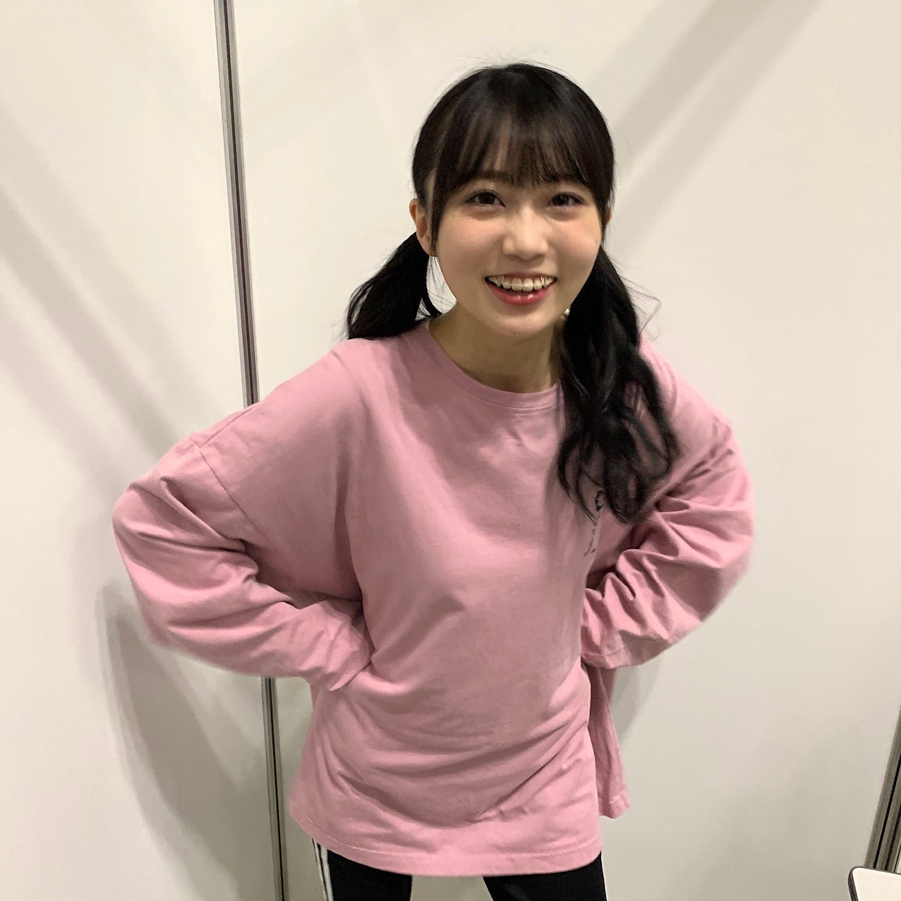

2020/1211Fri勇気を出すんだ 松尾美佑
4期生ライブ2020 ありがとうございました！
私達新4期生にとって、初めての4期生ライブ
初めての事、新しい事ばかりで
知らないうちに自分の限界を決めつけようとしていた自分に腹が立ったり、
自分を信じてみたり、
自分と沢山コミュニケーションをとりました
でも、自分の中だけじゃなくて
みんなに頼っていい事、みんながいる事を
みんなが教えてくれました。
それだけで凄く心があったかくなって
幸せに気付けて良かったなと思いました。
もう見たことある写真かもかもですが、
お気に入りなのでもう一回見て欲しいです！
高校2年生16歳の松尾美佑です！
まつおみゆですˊᵕˋ
4期生ライブ2020、改めてありがとうございました！！
そして感想をコメントに下さった皆さん、
本当に嬉しく読みました！
ありがとうございます！
まずコメントにも沢山頂いたユニットコーナー
『Threefold choice』
のお話から！
今回有難いことにレイちゃんと黒見ちゃんと3人で披露させて頂きました
同い年でいつもにこにこな2人と一緒にできることも、
その曲がThreefold choice だということも、
全てが嬉しくて有り難かったです
ステージの後ろのスクリーンに映っていた
巨大なレイちゃんツリー、くろみトナカイ、みゆサンタ
あの映像の撮影も本当に楽しくて、
3人でひたすらわちゃわちゃしました( ᐛ )
レイちゃんツリーが本当に可愛くて面白かったです(⸝⸝⍢⸝⸝)
黒見ちゃんは黒見ちゃんらしいお上品なトナカイさんでした(*¨*)
リハーサルの時から曲が始まる直前に3人で
頑張るぞ！の"えいえいおー！"をしていました！
演出も本当に可愛く面白くして下さって、
楽しくて楽しくて
"笑顔届いたよ！"
と言ってくださった方がいらっしゃって本当に嬉しいです☺︎
photo by トナカイちゃん
そして新曲
『Out of the blue』
4期生16人として初めての楽曲を頂きました
本当に有難いです。
振り付けが本当に可愛くて、
皆さんともいつか一緒に踊りたいです！
^._.^ ←ねこ
私のお気に入りはラスサビの
みんなで一緒に一列で前に出てくる所です！
16人でこれからももっと前に一度進みたいです！
1度聞いたら頭の中の再生ボタンが止まらないリズムも大好きです！
そして4期生のみんなにとって大切な
『4番目の光』を今回16人で披露させて頂きました。
有難い気持ちと自分達がいてもいいのかという不安とが混ざっていました。
でも、せいらちゃんが元々16人だったと言ってくれて、本当に嬉しくて
不安で縮こまっていた心が膨らんで弾けて温かさが広がりました。
歌割りにも入れてもらい、
ゆりちゃんとせいらちゃんが
"おいでおいで〜"と毎回してくれて、
目を合わせて安心させてくれて、
背中をぽんぽんとしてくれて、
本当に優しくて嬉しくてしょうがなくて。
この期間、本当にみんなから優しさを沢山貰って心の温かさから生まれた幸せに溢れた空気が宝物になりました。
見て見て見て！


可愛いでしょ〜！！！！！
悩める矢久保ちゃん
お気に入り過ぎて皆さんにも自慢したくなりました。
今回フォーメーションがお隣さんなことが多くて、いっぱい助けて貰っちゃいましたˊᵕˋ
身長差が凄くてお互いいつもびっくりし合っています
みにまむちゃんです
明日は〜
なお〜〜〜〜〜〜〜〜〜
今日のアドベントカレンダーのチョコは
ミルクチョコレートの中にホワイトチョコが入ってるのだったよ
最後までありがとうございました！
ミュウでした¨̮
ばいっっっっっっ( Ꙭ )/''
《あとがき》
只今、とんでもなく携帯が暴走しておりまして。
まともに文字を打っているつもりでも全く違う文章が登場する事件が多発しています。
精一杯丁寧に確認をしながら書いていますが誤字がありましたらすみません( ᵕ ᵕ̩̩ )
ほんとのほんとのばいっっっっっっ( Ꙭ )/''
またね( Ꙭ )/''


PROFILE
新4期生リレー
202104
| SUN | MON | TUE | WED | THU | FRI | SAT |
|---|---|---|---|---|---|---|
| 1 | 2 | 3 | ||||
| 4 | 5 | 6 | 7 | 8 | 9 | 10 |
| 11 | 12 | 13 | 14 | 15 | 16 | 17 |
| 18 | 19 | 20 | 21 | 22 | 23 | 24 |
| 25 | 26 | 27 | 28 | 29 | 30 | |

コメント(221)
新曲も可愛い振り付けで生で早くみたい！
質問させてもらいます。
・ライブ前に何でリラックスした？
・ライブ前に何か食べてた？
・4期生ライブ終わった後一番最初に何食べた？
・一番緊張した場面あった？
ライブほんとに良かった！
バク転凄かったよ！！！
クリスマスだね〜
ハッピー・ハッピー
プレゼント欲しいな〜
めちゃめちゃ輝いてたよ！！！！
Threefold choiceめちゃめちゃよかったよ！みててしあわせな気持ちになれました！！！
これからは、16人での4期生として自分らしく頑張ってね
みゆちゃん今日も可愛いです。
みゆちゃん今日も１日お疲れ様です。
今日はお仕事お休みでした。
今日は１日ゆっくりと休むことが出来ました。
明日からは三連勤頑張ります。
これからもお仕事頑張って下さい。
自分もお仕事頑張ります。
これからのブログを楽しみにしてます。
改めて4期ライブお疲れ様！！
スリホよかったな！誰をあいしてるの？なんてもう画面の前で頭抱えたよ！！
わしは1番好きやったのはトキトキメキメキの美佑ちゃんのアクロバットよ！ありゃカッコ良すぎるばい！
なんやそのトナカイさんは！！クリスマスにして欲しい！笑笑
新曲ホンマによかった。MVとか出るのめちゃくちゃ期待してる！
今日はこの辺で！またブログ更新楽しみにしてるばい！
栃木より愛を込めて。
ブログ更新お疲れ様！！！！
あと、ライブもお疲れ様！！！！！
輝いてるみゆちゃん見れて大満足
16人だけでのライブってすごく大変そうだろうけどみんな楽しそうにしてて見てるこっちまで楽しめました！
スリフォはもちろんサンタみゆちゃんを選ぶね(笑)
Out of the blue初披露めちゃくちゃ良かった～
振り付け可愛いし！なんかメロディが癖になるっていうか。とにかく良かったよってことだけお伝えしておきますね(笑)
素敵なライブでした。
16人がこれからも4番目の光として活躍していくだろうと思うとワクワクするね！
またいつか4期生ライブが開催されることを楽しみにしてます
ではでは、また次回！
秋田より
2月27日のミーグリミュウ取れたよ！
楽しみ〜！！
4期生ライブお疲れ様
これからも4期生の活躍、みゅーちゃんの活躍、とても楽しみです！
自分のペースで楽しんでね！
トナカイみゅーちゃんめちゃくちゃ可愛いです笑
最後に質問！
・クリスマスプレゼント何が欲しい？
よろしくね
そういえば、前回のライブの感想で言うの忘れてたことがあって…
美佑ちゃんさ、"画面を感じないくらい楽しんで貰いたい"って。だいちゃりは家のテレビに繋いで4期生ライブみてたんだけどテレビに画面なんて無かった(笑)本当に会場にいるくらい楽しめたし4期生のパワーも美佑スマイルもしっかり届いてましたよ〜って！本当に無敵の笑顔ですね！
あ、個人的な話なんですけど先日3年間使っていた腕時計がとうとう寿命を迎えました。今年の夏だか秋に電池交換したばかりなのに気づいたら動かなくて…それでこの間仕事が休みだったからApple Watchを買いに行ったんですけどApple Watchの文字盤(画面)を好きな画像に変えれられて、だいちゃりは4期生16人の集合写真にしました！
もちろん仕事中はいじったり出来ないけど時間を見る度に4期生16人が笑顔で写ってて見るのも楽しいし、仕事頑張ろうってモチベーション維持にも繋がってて最高だなと感じました。やっぱり4期生の力は偉大ですね(笑)
明日仕事行けば日曜日はお休みです。Apple Watchに映ってる4期生と共に明日も仕事頑張ってくるから美佑ちゃんも1日楽しく過ごしてね〜！
今回はこの辺で終わりになっちゃうけどまた質問しながらコメントするので待っててください！それでは、ばちっ！！！
4期生ライブの感想をみんながあげていて
やっとみゆりんの感想が見れる〜って
とってもとっても楽しみだった(⑉• •⑉)❤︎
私は結局見れなかったけどみゆりんが【Threefold choice】歌ったって聞いて
すごく見たかったなーって思った！
いつか見れたらいいなぁ
話は変わるけど、今日まで修学旅行だったの！
京都にも言ったけどやっぱり京都美人っていいねぇ
なおちゃんもこんな感じなのかなーって思いながら
京都のお姉さん方とお話したよ〜
みゆりんから見たなおちゃんはどんなお姉さんなのかな笑
✂︎- - - - - - - -キリトリ- - - - - - - - - - -✂︎
4期生ライブ本当にお疲れ様！
サンタさんの写真可愛すぎ(⑉• •⑉)❤︎
いつか実際に見たいなぁ笑
携帯の不調が早く治りますように
✂︎- - - - - - - -キリトリ- - - - - - - - - - -✂︎
さっきも書いちゃった質問だけどもう一度書くね！
【質問】
✽みゆちゃんから見てなおちゃんはどんなお姉さん？
✽旅行に行けるとしたらどこに行きたい？
今日も素敵なブログをありがとう☺︎
また5日後楽しみにしてるね♡
元気出ました！これから頑張ろうと思えた！
ほんとに笑顔になれました！
4期生みんなの仲の良さが伝わってきて楽しく見ることが出来ました
ありがとう これからも応援させてくださいね。
まずは改めて4期生ライブお疲れ様〜
本当に素敵なライブをありがとう
このブログを通してミュウちゃん成長したんだね
とてもいいね〜
これからもたくさんライブのミュウちゃんを見たいなぁ
あ〜またあのライブ見たくなってきた笑
サンタミュウちゃんがかわいすぎる〜
こんなかわいいサンタさんからプレゼント貰いたい〜
あ、ミュウちゃんはサンタさんからどんなプレゼントを今年は貰いたい？
教えて欲しいな〜
それじゃまた5日後に！
またね〜
みゆたんのライブへの気持ちたくさん聞けて嬉しい！
本当にお疲れ様でした！！
ミーグリ行くよ〜
たくさん話そうね！
ライブのこともね！楽しみだね！！！
またコメントするね。
４期生ライブお疲れさまでした！
最初から最後までとても楽しい時間だったよ。
threefoldchoiceはレイちゃんくろみちゃんとの３人ユニット最高でした。
後ろの映像もサンタ、トナカイ可愛らしいなと思ってたらスゴい元気なツリーが登場してビックリ
新曲もダンスが可愛らしくてライブで聞くと踊りたくなるような楽しい曲だね。
早くききたいな。
年末にかけて忙しくなると思うけど体調には気をつけて。
これからも応援してます。
まつおかわいい
16人での初ライブ、どうやった？
みんな良い表情してたよ！
オンラインでもめっちゃ楽しめた！
色んなところに4期生の仲の良さが出てて、見てて微笑ましかった。
ただ仲が良いだけじゃなくて、お互いのこと信頼して支え合ってるんやなって。
みんなの新しい一面も知れて良かった。
ユニット曲も良かった！
Threefold choice めっちゃ好きやねん。
衣装も似合ってた！！
かわいさ爆発してましたよ笑
ライブ中、何回ミュウスマイルに心をやられたことか、、 最高の癒しでした。
元気いっぱいなミュウちゃん見れて嬉しかった！！実際のライブも楽しみ！
新曲も良かった！
4期生らしい、アップテンポな曲やったね。
Out of the blue 突然って意味かな？
歌詞もメロディも、4期生にあってて良かった！！もう一回聴きたい！
耳に残るメロディとキャッチーな振り付け。
MVとかもあったら楽しみやな。
また待ってます！！
最後にアフタートーク！
ライブ後で疲れてるのにありがとう。
みんなのパジャマ姿かわいすぎ。
4期生のふわふわ感最高。
見てて癒された。
それに曲も披露してくれた！！
僕だけの光とあらロマ。
パジャマバージョンとか最高笑
最後まで楽しませてもらいました！
4期生だけでのライブ大変やったと思うけど、ほんまにお疲れ様。
16人全員で創り上げた、最高のライブやったと思います！
みんなの成長を感じました。
これからの乃木坂を引っ張っていってくれると信じてます。4期生がいるから、これからも安心やね。
これからも16人で頑張って！
ずっと応援してます。
本当にお疲れ様。ゆっくり休んでね。
いつもありがとう。
4期生ライブ、観ました！！
観てよかった。すっごくキラキラしてて、オンラインでもみんなの頑張ってるところ沢山つたわってきました！！
なにげなく見ていた4期ライブで、松尾美佑ちゃんに一番惹かれました！！
手足長いからパフォーマンス目立ってたし、綺麗で大人っぽくてすごいなって目で追ってしまいました。
ミーグリも美佑ちゃんの申し込んだので、来年よろしくお願いします♪
4期ラほんと良かった〜
個人ブログもモバメも早くはじまってくれ〜
もっといっぱい写真見たいよ
ミュウツー
わああ、みゅうサンタ可愛い！！
『Threefold choice』の衣装めっちゃ好きなのでみゅうが着てくれてめっちゃ嬉しかったです！
『out of the blue』イントロからリズムがすごいいい感じで、この時代にいろんなこと忘れて楽しくなれる！名曲でした。
mvあるのかな？早く見たいな
寒くなってきて、体調崩してる人も多いようなのでお気を付けてくださいね。
ではまた
ばいばーい
かわいすぎでしょ〜！
早く有観客でライブ見に行きたいよ〜！
グッズの サンタ生写真の 笑顔が いいね
改めて4期生ライブお疲れ様でした〜！！感想は前に伝えさせてもらったけど、本当にかっこよくて可愛くてキラキラしてる美佑ちゃんが素敵すぎたよ(*´꒳`*) たくさん練習したのかなとか考えると胸にくるものがありました（ ; ; ）
美佑サンタさん可愛い………！お写真ありがとう
みんなから貰った優しさをちゃんと受け取ることができて、それを返すことができる美佑ちゃんが大好きです。これからもたくさん宝物が増えますように。
携帯早くなおるといいね(o_o)
5日後に笑顔で会おうね〜！またコメントするね☺︎
またねっ( Ꙭ )/''
乃木坂4期生ちゃんは16人、みんなが揃ったこれからの大活躍を楽しみにしています！ミュウちゃん応援しているよー！
ミュウちゃんが踏み出す勇気を出せるように、元気付けられるように精一杯応援する気持ちを伝えられたら嬉しいな。
来年のミート&グリートで初めましてです。
楽しくおはなししよー。またね:-)
ありがとう
喜章（よしあき）
4期生ライブお疲れ様！！！みんな輝いてたし可愛かった！
そして、ミーグリ申し込んだよ！
ミーグリの初日、1/31の第1部から行きます!初めてミュウちゃんとお話しできるの楽しみにしてるね！！！
また5日が楽しみにしてるねー！
しまったり。
ヘアアイロンが壊れて
しまったり。
只今はスマホ暴走中。
師走も大忙しですね。
むしろ今日のブログｦ
ツーツー
だけで書くのもありかな
と、個人的に思います。
美佑さんの出演している
ラジオ聴いています。
Showroomも見ていますし
ミュウブームメントが
私の中で起きています。
ミューメント。
スタイルがほんと良いですね。
佇まいが好きです。
服もオシャレですし
髪型もメイクも好き
です。
声は大好き。
テスト期間になりますよね？
風邪引かないようにお
気をつけてください。
色々な髪型をまた見たい
です。
ウェーブが大好きで
とっても見たいです。
ミュウさんって。
天然ですよね？
サンタさん可愛いすぎる！！！！！
みゆちゃんお疲れ様！！！
4期生ライブを見ていてみゆちゃんの笑顔に惹かれました！
みゆちゃんが楽しそうに歌いながら踊っていて、こっちもつられて笑顔になってました！
取れそうならミーグリも取ってみたいなぁと
これからもコメント欄に出没するかもしれませんが、みゆちゃんの活躍を応援してます！！！
転
ました。そう、昔から案ずるより生むが
易しって言うし。
ミュウちゃんの個性と言うかいいところ
沢山見つけられました。
ミュウちゃん自身もメンバーのいいとこ
ろ見つけられたようで何よりです。
やくぼちゃん、いいね。
ばいいいいいいっ。
コメントする